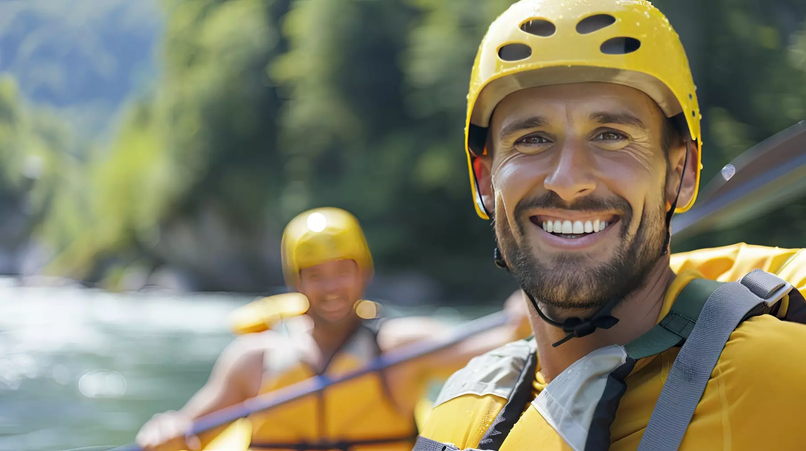

Our Commitment to an Exciting and Safe Experience
Our mission is to provide the most exciting and safe rafting experiences, where adventure meets peace of mind. We strive to ensure every guest feels the thrill of the rapids while knowing they’re in the hands of highly skilled guides who prioritize both fun and safety. Our goal is to create unforgettable moments that inspire a love for adventure and the great outdoors.